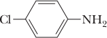
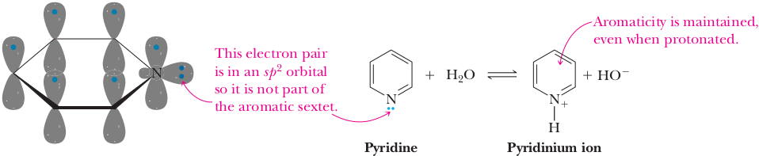
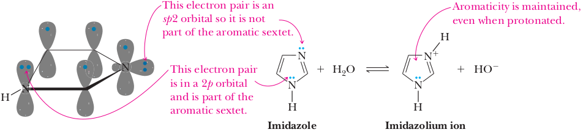
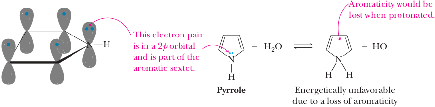

Acid-Base Properties of Amines
Like ammonia, all amines are weak bases, and aqueous solutions of amines are basic. The following acid-base reaction between an amine and water is written using curved arrows to emphasize that, in these proton-transfer reactions, the unshared pair of electrons on nitrogen forms a new covalent bond with hydrogen and displaces hydroxide ion.
| CH3-NH2 | + H2O | ⇌ | CH3-NH3+ | + OH− |
It is common to discuss the basicity of amines by reference to the acid ionization constant of the corresponding conjugate acid, as illustrated for the ionization of the methylammonium ion.
CH3-NH3++ H2O ⇌ CH3-NH2
Ka = [CH3-NH2][H3O+]/[CH3-NH3+] = 2.29 x 10−11 pKa = 10.64
| Amine | Structure | pKa of Conjugate Acid |
|---|---|---|
| Ammonia | NH3 | 9.26 |
| Primary Amines | ||
| Methylamine | CH3NH2 | 10.64 |
| Ethylamine | CH3CH2NH2 | 10.81 |
| Cyclohexylamine | C6H11NH2 | 10.66 |
| Secondary Amines | ||
| Dimethylamine | (CH3)2NH | 10.73 |
| Diethylamine | (CH3CH2)2NH | 10.98 |
| Tertiary Amines | ||
| Trimethylamine | (CH3)3N | 9.81 |
| Triethylamine | (CH3CH2)3N | 10.75 |
| Aromatic Amines | ||
| Aniline |  | 4.63 |
| 4-Methylaniline |  | 5.08 |
| 4-Chloroaniline |  | 4.15 |
| 4-Nitroaniline |  | 1.0 |
| Aromatic Heterocyclic Amines | ||
| Pyridine |  | 5.25 |
| Imidazole |  | 6.95 |
Aliphatic Amines
All aliphatic amines have about the same base strength, pKa of the conjugate acid 10.0–11.0, and are slightly stronger bases than ammonia. The increase in basicity compared with ammonia can be attributed to the greater stability of an alkylammonium ion, as for example RCH2NH3+ compared with the ammonium ion, NH4+. This greater stability arises from the electron-releasing effect of alkyl groups and the resulting partial delocalization of the positive charge from nitrogen onto carbon in the alkylammonium ion.
Aromatic Amines
Aromatic amines are considerably weaker bases than aliphatic amines. Compare, for example, values of pK a for aniline and cyclohexylamine. The ionization constant for the conjugate acid of aniline is larger (the smaller the value of pKa, the weaker the base) than that for cyclohexylamine by a factor of 106.
+ H2O
⇌
+ OH−
pKa = 10.66; Ka = 2.19 x 10–5
+ H2O
⇌
pKa = 4.63; Ka = 2.34 x 10–5
Aromatic amines are less basic than aliphatic amines because of a combination of two factors. First is the resonance stabilization of the free base form of aromatic amines.
For aniline and other arylamines, the resonance stabilization is the result of the interaction of the unshared pair on nitrogen with the p system of the aromatic ring. The resonance energy of benzene is approximately 151 kJ (36 kcal)/mol. For aniline, it is 163 kJ (39 kcal)/mol. Because of this resonance interaction, the electron pair on nitrogen is less available for reaction with acid. No such resonance stabilization is possible for alkylamines. Therefore, the electron pair on the nitrogen of an alkylamine is more available for reaction with an acid; alkylamines are stronger bases than arylamines.
The second factor contributing to the decreased basicity of aromatic amines is the electron-withdrawing inductive effect of the sp2-hybridized carbons of the aromatic ring compared with the sp3-hybridized carbons of aliphatic amines. The unshared pair of electrons on nitrogen in an aromatic amine is pulled toward the r ing and, therefore, is less available for protonation to form the conjugate acid of the amine. These factors are the same two that operate to make phenoxide ion less basic than alkoxide ions (Section 21.4B). Electron-releasing groups (for example, methyl, ethyl, and other alkyl groups) increase the basicity of aromatic amines, whereas electron-withdrawing groups (for example, nitro and carbonyl groups) decrease their basicity. The decrease in basicity on halogen substitution is the result of the electron-withdrawing inductive effect of the electronegative halogen. The decrease in basicity on nitro substitution is caused by a combination of inductive and resonance effects as can be seen by comparing the pKa values for the conjugate acids of 3-nitroaniline and 4-nitroaniline.
pKa 2.47
pKa 1.0
The basicity-decreasing effect of nitro substitution in the 3-position is almost entirely the result of its inductive effect, whereas that of nitro substitution in the 4-position is attributable to both inductive and resonance effects. In the case of para substitution (as well as ortho substitution), delocalization of the lone pair on the amino nitrogen involves not only the carbons of the aromatic ring but also oxygen atoms of the nitro group.
Heterocyclic Aromatic Amines
Heterocyclic aromatic amines are weaker bases than aliphatic heterocyclic amines. Compare, for example, the pK a values for the conjugate acids of piperidine, pyridine, and imidazole.

pKa 10.75
pKa 5.25
pKa 6.95
We discussed the structure and bonding in pyridine and imidazole in Section 21.2D. In accounting for the relative basicities of these and other heterocyclic aromatic amines, it is important to determine first if the unshared pair of electrons on nitrogen is or is not a part of the (4n + 2) π electrons giving rise to aromaticity. In the case of pyridine, the unshared pair of electrons is not a part of the aromatic sextet. Rather, it lies in an sp2 hybrid orbital in the plane of the ring and perpendicular to the six 2p orbitals containing the aromatic sextet.
Proton transfer from water or other acid to pyridine does not involve the electrons of the aromatic sextet. Why, then, is pyridine a considerably weaker base than aliphatic amines? The answer is that the unshared pair of electrons on the pyridine nitrogen lies in a relatively electronegative sp2 hybrid orbital, whereas in aliphatic amines, the unshared pair lies in an sp3 hybrid orbital. This effect decreases markedly the basicity of the electron pair on an sp2-hybridized nitrogen compared with that on an sp3 hybridized nitrogen. There are two nitrogen atoms in imidazole, each with an unshared pair of electrons. One unshared pair lies in a 2p orbital and is an integral part of the (4n + 2) π electrons of the aromatic system. The other unshared pair lies in an sp2 hybrid orbital and is not a part of the aromatic sextet; this pair of electrons functions as the proton acceptor.
As is the case with pyridine, the unshared pair of electrons functioning as the proton acceptor in imidazole lies in an sp2 hybrid orbital and has markedly decreased basicity compared with an unshared pair of electrons in an sp3 hybrid orbital. The positive charge on the imidazolium ion is delocalized on both nitrogen atoms of the ring; therefore, imidazole is a stronger base than pyridine. Like pyridine and imidazole, pyrrole is an aromatic heterocycle, but it is not nearly as basic as pyridine or imidazole. Pyrrole’s lack of base strength can be understood by oticing that the lone pair on the nitrogen atom is in a 2p orbital and is part of the aromatic sextet of electrons. As a consequence, a protonated pyrrole cannot maintain aromaticity because the protonated nitrogen would be sp3 hybridized and there would only be 4 p electrons remaining (in violation of two of Hückel’s aromaticity rules). A loss of aromaticity is energetically very costly and severely limits the ability of pyrrole to accept a proton despite its structural similarity to pyridine and imidazole.
Guanidine
Guanidine, pKa 13.6, is almost as basic as hydroxide ion. Its conjugate acid is a weaker acid than almost any other protonated amine.
+ H2O
⇌
+ OH− pKa = 13.6